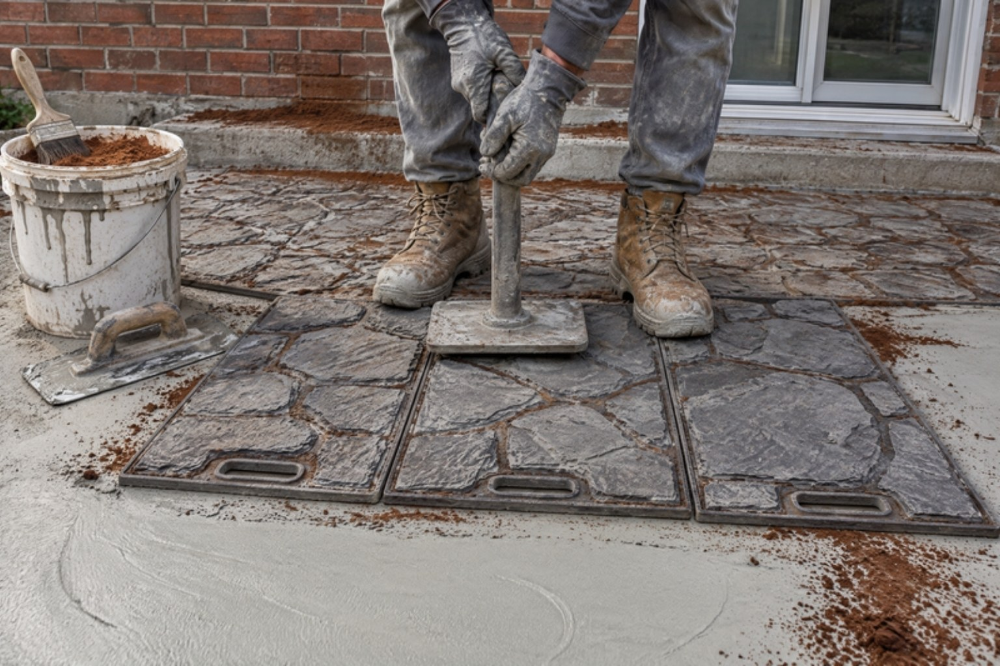
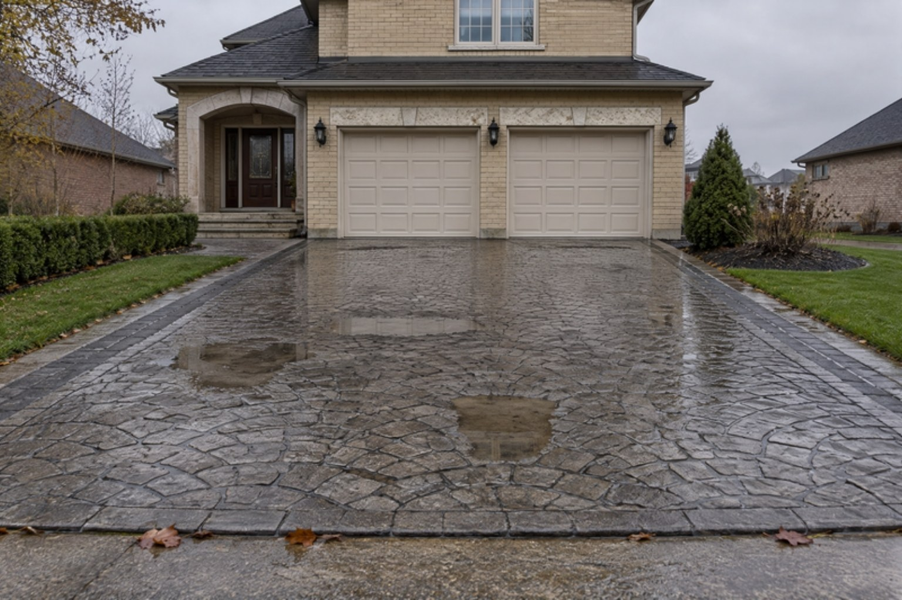
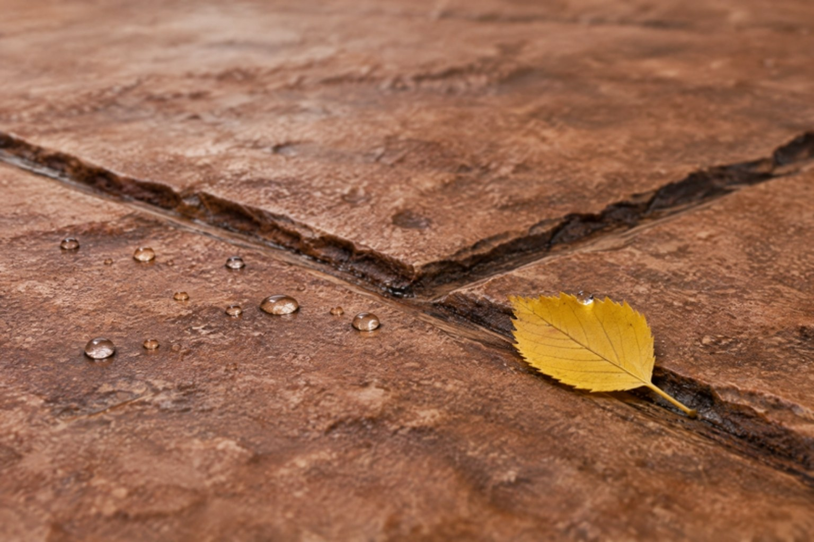

A stamped concrete overlay is a layer of polymer-modified cement, roughly a quarter to three-eighths of an inch thick, troweled over an existing slab and pressed with texture mats while it is still soft. Integral colour goes into the mix, a contrasting release agent lands in the low spots, and a sealer locks it in. From the sidewalk it reads as cut stone. Underneath, it is your original 1990s broom-finish patio, still doing the structural work.
That is the whole appeal. The slab you already paid for stays. There is no excavator in the backyard, no dumpster on the driveway, no week of curing before you can walk on it. A stamped overlay goes down in two to four days, and on a sound slab it is the most cost-effective decorative finish we install. The catch, as always with resurfacing, is the word sound. More on that below.
Stamped Concrete Overlay vs Pavers vs a New Stamped Pour
Homeowners in Toronto usually arrive at a stamped overlay by comparing it against two alternatives: interlocking pavers, or ripping the slab out and pouring new stamped concrete. All three can look excellent. They differ on cost, disruption and what they ask of your existing slab.
- Stamped overlay. Keeps the slab. Two to four days. Seamless surface with no joints for weeds, ants or shifting. Needs a stable, level base to bond to. Lowest cost of the three.
- Interlocking pavers. Usually means removing the old concrete, excavating, and building a compacted granular base. A week or more. Looks great on day one, but every joint is a place for weeds, ants and polymeric sand to fail, and pavers in the GTA settle and heave at the edges within a few winters unless the base was built perfectly.
- New stamped pour. Also means a tear-out, then a full new slab stamped while it is fresh. The right answer when the old slab has moved, cracked through or is too thin. Highest cost, longest timeline, longest life.
If the slab passes inspection, the overlay wins on nearly every line. If it does not, the overlay is money spent twice. We now do both overlays and new stamped pours, so the assessment is not a sales pitch for one or the other.
A stamped overlay is only as flat, and only as permanent, as the concrete under it. We test the slab before we talk about patterns.
Is Your Slab a Candidate for a Stamped Overlay?
Walk the surface with a straightedge and a screwdriver. You are checking for movement and for rot, not for ugliness. Surface stains, flaking, hairline cracks, a tired broom finish, an old peeling paint or coating: all fixable, all good candidates. What rules a slab out:
- A height difference across a crack. One side higher than the other means the base has washed out or heaved. The overlay will crack along that line in the first winter.
- Settlement toward the house. A patio or walkway that has dropped and now drains against the foundation needs to be lifted or re-poured, not dressed up.
- Crumbling through the depth. If a screwdriver sinks into the concrete, there is nothing to bond to. This is common on older, non-air-entrained slabs that have eaten salt for forty years.
- A slab under 3 inches thick, especially on a driveway. There is no overlay that turns a thin walkway into a parking pad.
Everything else, including spalled surfaces and wide-but-stable cracks, is handled in the prep stage with structural crack and spall repair before the overlay goes on.

How a Stamped Overlay Is Installed (Done Right)
The pattern is the last five percent of the job. The ninety-five percent that decides whether it is still there in 2040 happens before the first mat touches the surface.
- Profile the slab. Pressure washing, then grinding or acid etching so the surface has the texture of medium sandpaper. Smooth, sealed or painted concrete will not bond. Old coatings come off completely.
- Repair first. Cracks are routed and filled with a flexible polymer repair, spalls are patched, and any existing control joints are honoured. Joints in the slab must come through the overlay in the same place, or the overlay cracks randomly right beside them.
- Prime and apply. A bonding primer, then the polymer-modified overlay troweled or gauge-raked to a consistent depth with the base colour already in the mix.
- Release and stamp. Powdered or liquid release agent in a contrasting shade is applied, and the texture mats are laid in sequence and tamped. Timing is everything: too early and the mats sink, too late and the texture does not take.
- Detail and cut. Grout lines are hand-touched where mats met, borders are cut or textured, and control joints are re-cut through the overlay over the originals.
- Wash, then seal. Excess release is washed off the next day to reveal the final colour, and a penetrating or film-forming sealer goes on once the surface is dry. In the GTA that sealer is what makes the whole system frost-resistant and salt-resistant.
Ask any installer how they handle your existing control joints. If the answer is “we just go right over them,” walk away. Concrete slabs move at their joints by design. An overlay that is not cut to match will tear exactly there, and that tear is the number one stamped overlay failure we are called in to fix across Toronto and Mississauga.
Stamped Concrete Patterns That Hold Up in the GTA
Pattern choice is mostly about taste, but some patterns forgive winter and years of foot traffic better than others. Deep, aggressive textures hold salt and dirt and show wear sooner. Shallow, broad textures hide it. These are the patterns we install most across the GTA and why.
- Random flagstone. Irregular stones with wide grout lines. The most forgiving pattern on a patio because there is no repeating grid to show where mats met. Pairs well with sandstone, buff and tan base colours on a resurfaced patio.
- Ashlar slate. Rectangular stones in a running or random layout. Cleaner and more modern than flagstone, and the go-to for front walkways and porches where straight edges meet the house. Grey, charcoal and blue-grey bases with a charcoal release.
- European fan or cobblestone. Small-unit patterns suited to driveways and entries. Visually busy, which hides tire marks and salt haze well. Usually a mid-grey or taupe base with a dark release, kept moderate in depth so snow clears easily on a resurfaced driveway.
- Herringbone or running-bond brick. A classic for porches and front landings on brick homes across Toronto’s older neighbourhoods. Works best with a plain smooth border band.
- Seamless slate texture. No grout lines at all, just cleft-stone texture across the whole surface, with the colour doing the work. Easiest to clean, least slip-prone when wet, and a good match for modern homes in Oakville and Vaughan.
- Wood plank. Popular in 2026 for backyard patios that want a deck look without the deck maintenance. Warm brown bases with a walnut release.
On colour, the rule is simple: lighter base, darker release. The release in the grooves is what gives the stone its shadow and depth. Two-tone, hand-antiqued finishes cost a little more and look far less like a product and far more like stone. For a broader look at what GTA homeowners are choosing this year, see our 2026 exterior concrete trends.

Stamped Concrete Overlay Cost in Toronto (2026)
Stamped overlays are priced per square foot, with the pattern complexity, number of colours, border work and the amount of repair in the prep stage moving a quote within the range. The numbers below are typical installed prices across Toronto and the GTA in 2026, with the alternatives for comparison.
| Option | Installed (GTA, 2026) | Notes |
|---|---|---|
| Stamped overlay, per sq ft | $13 – $18 | Prep, overlay, pattern, colour, release, sealer |
| Jewelstone decorative resurfacing, per sq ft | $14 – $22 | Hand-troweled, banded and custom finishes |
| Interlocking pavers, per sq ft | $18 – $30 | Plus removal of the old slab |
| New stamped concrete pour, per sq ft | $22 – $32 | Plus $1,500–$4,000 removal |
| Backyard patio overlay, approx. 300 sq ft | $3,900 – $5,400 | Two to three days |
| Front walkway overlay, approx. 120 sq ft | $1,500 – $2,400 | Often paired with porch or steps |
| Porch resurfacing (stamped or Jewelstone) | $2,500 – $6,000 | Steps add $1,800–$3,500 |
| Single-car driveway overlay, approx. 400 sq ft | $5,200 – $7,200 | Stamped; broom-texture overlay runs less |
Put the patio example beside its alternatives and the gap is clear. A 300 sq ft stamped overlay is $3,900–$5,400. The same patio in pavers is $5,400–$9,000 plus removal. A new stamped pour is $6,600–$9,600 plus removal. That is the 40–60% saving that resurfacing delivers whenever the slab is sound, and it is why we check the slab first. Our 2026 resurfacing cost guide covers the full range of finishes.
Stamped Overlay vs Jewelstone: Which Finish?
Both are overlays on the same prepared slab, and we install both. A stamped overlay uses mats to reproduce a stone or brick pattern with a realistic relief. Jewelstone is a hand-troweled decorative system with banded, flagstone-cut or seamless looks, a finer texture underfoot, and more freedom on colour blending. Stamped tends to win on patios and driveways where a deep stone pattern is the point. Jewelstone tends to win on porches, steps and front entries where crisp borders, risers and a smoother walking surface matter. Plenty of homes end up with both: a stamped patio out back, Jewelstone on the porch and steps.

Making a Stamped Overlay Survive a Toronto Winter
Stamped concrete has a reputation in some circles for fading and flaking. Almost every example we have been called to look at came down to three things: a bad bond from skipped prep, joints that were not honoured, or a sealer that was never maintained. The system itself handles our freeze-thaw cycles well when it is installed and kept the way it should be.
- Re-seal every two to three years. The sealer is the wear layer. It keeps water out of the overlay, stops salt from etching the pattern and keeps the colour from going chalky. When water stops beading on the surface, it is time.
- No de-icing salt the first winter. Use sand for traction while the overlay and sealer fully cure. After that, a sealed stamped surface handles normal salt use.
- Choose a texture for traction. Deep slate or flagstone textures grip well. On steps and sloped walkways we add a fine anti-slip additive to the sealer, which disappears visually and matters in January.
- Shovel, don’t chip. A plastic-edged shovel is fine. Metal ice choppers are what take the top off any decorative surface, stamped or not.
Overlays need surface and air temperatures above about 10°C for several days to cure properly, so in a typical year the stamped overlay season in Toronto runs late April through October, stretching into a mild November. Mid-November onward is assessment and booking time: we measure the slab, confirm it is a resurfacing candidate, settle the pattern and colour, and hold a spring slot. Spring dates fill through the winter.
Where We Work
Artisan Coat installs stamped concrete overlays, Jewelstone resurfacing and new stamped pours across Toronto, Mississauga, Brampton, Vaughan, Oakville, Etobicoke, North York, Scarborough, Richmond Hill, Markham, Burlington, Milton, Caledon, Hamilton and the wider GTA. Assessment, repair, overlay, pattern, colour and sealer are handled by one crew with 20+ years of experience, backed by a written warranty. Browse finished patios, porches and driveways in our gallery or the full list of services.
The Short Version
A stamped concrete overlay turns a sound but tired slab into slate, flagstone, cobblestone or wood plank in two to four days, with no demolition. In Toronto in 2026 it runs $13–$18 per square foot installed, against $18–$30 for pavers and $22–$32 for a new stamped pour, both of which also need the old concrete removed. A typical 300 sq ft patio overlay is $3,900–$5,400.
The job lives or dies on prep: a profiled surface, repaired cracks, joints that are honoured through the overlay, correct stamp timing and a sealer that is renewed every two to three years. Get those right and a stamped overlay is a 15 to 25 year finish. Skip them and no pattern will save it. If your slab has moved, cracked through or crumbled, the honest answer is a new stamped pour, and we will tell you that too.